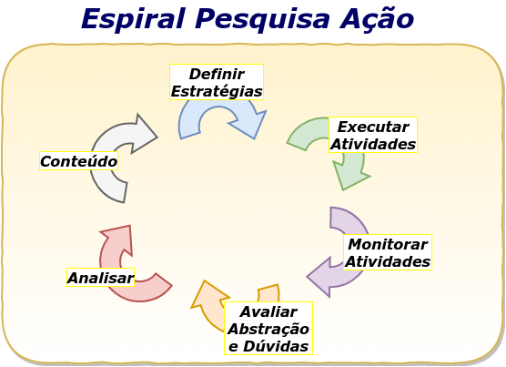

Projeto de Intervenção: Um novo formato de avaliação final nos cursos de especialização da PMBA
A educação superior brasileira tem sido objeto de muitas críticas, seja no tocante à infraestrutura das universidades, seja no tocante à qualificação dos corpos docentes e discentes, seja ainda no tocante às estruturas curriculares, bem como aos processos de ensino-aprendizagem, aí inseridos os métodos e os critérios de avaliação. “Como se pode constatar, o tema da avaliação representa uma área critica também no Ensino Superior, pois pesquisas recentes vem apontando as dificuldades e os impasses vividos por professores universitários ao avaliar os seus alunos,...” CHAVES – UFG. Como em toda a trajetória escolar, a avaliação é um dos pontos mais sensíveis do ambiente acadêmico, causando verdadeiro pânico em alguns atores da relação educacional. Mas antes de se averiguar a profundidade desse temor, é necessário se compreender a verdadeira finalidade da avaliação no processo educativo brasileiro. “Estamos vivendo no Brasil atualmente um momento de reconstrução do cotidiano escolar e a avaliação ocupa um papel preponderante nessa redefinição, devido principalmente a sua relação com o fracasso escolar e a percepção das implicações e determinações da avaliação na formação profissional”.CHAVES – UFG. Além de aferir a apropriação dos conteúdos pelo corpo discente, a avaliação se presta também a contribuir com processo de transmissão do conhecimento, uma vez que no ensino superior, em certamente medida, são utilizados como instrumentos de avaliação, procedimentos que em verdade são ferramentas de produção do conhecimento. São os conhecidos papers, resenhas, artigos, monografias, dissertações e teses. Tais documentos acadêmicos guardam uma característica comum, qual seja o forte conteúdo teórico, faltando-lhes por vezes a objetividade para a aplicação prática de uma ideia profundamente desenvolvida em um trabalho acadêmico. Eis que num ambiente acadêmico policial militar, após anos de produção acadêmica no formato de monografia, evolui-se para um formato mais objetivo, com leve fundamentação teórica, mas, sobretudo, com ampla expertise e aplicabilidade prática no ambiente institucional. Assim, neste trabalho de conclusão de curso (TCC) do Curso de Especialização em Docência do Ensino Superior da Universidade Salvador (UNIFACS), pretende-se abordar o projeto de intervenção como novo formato de avaliação nos cursos de especialização da PMBA, analisando-se as suas peculiaridades e observâncias aos preceitos normativos pertinentes aos trabalhos acadêmicos da educação superior, mormente ao segmento da pós-graduação. Entendendo qualificado o suficiente o corpo discente dos dois cursos de especialização realizados na Academia de Polícia Militar da Bahia, a ponto de identificar problemas institucionais vinculados ao Programa de Metas da Corporação e apontar soluções para o comando da PM baiana, o Exmº Senhor Coronel PM Comandante Geral da PMBA, instituiu por meio da Portaria nº 126/2015, o Projeto de Intervenção como modelo de trabalho de conclusão de curso tanto para o Curso de Especialização em Segurança Pública (CESP), quanto para o Curso de Especialização em Gestão Estratégica de Segurança Pública (CEGESP). Sob o viés da gestão organizacional, tal iniciativa traduz-se como uma ação de valorização do público interno, uma vez que permite aos oficiais intermediários e superiores a contribuir para a solução de problemas afetos à administração da PMBA, instituição quase bicentenária e presente nos 417 (quatrocentos e dezessete) municípios baianos. Numa estrutura militar e rigidamente hierarquizada, ouvir os subordinados pode parecer fraqueza, mas no caso em tela, em verdade é uma grande sabedoria, posto que anualmente cerca de 100 (cem) oficiais frequentam e concluem os citados cursos de especialização profissional, ocasião em que a PMBA pode ver tratados com relativa minudência e ao mesmo tempo com enfoque na baixa complexidade, baixo custo financeiro e fácil exequibilidade pelo menos uma centena de assuntos que podem ser melhorados, simplificados e, sobretudo transformar a realidade administrativa ou operacional da corporação. Ante estas informações, a par de se investigar a validade metodológica dos aludidos projetos de intervenção resultantes dos CESP e CEGESP na PMBA, pergunta-se: Os trabalhos de conclusão dos cursos de especialização da PMBA atendem aos preceitos da Associação Brasileira de Normas Técnicas (ABNT) enquanto trabalhos acadêmicos? Considerando a aplicação deste formato de TCC nos anos de 2016 e 2017, tendo sido aprovados todo o corpo discente, inclusive, com o efetivo aproveitamento de 19 (dezenove) dos projetos de intervenção elaborados na PMBA em 2016, somado ao formato de apresentação oral e depósito de exemplar escrito aprovado no acervo da biblioteca da APM, presumi-se, ab initio, que o modelo instituído pela PMBA esteja compatível com as exigências formais e metodológicas do ambiente acadêmico para o reconhecimento dos projetos de intervenção como trabalhos acadêmicos de conclusão de curso. Tem-se, pois, enquanto objetivo geral do presente trabalho, verificar se os projetos de intervenção produzidos como trabalhos de conclusão dos cursos de especialização da PMBA atendem aos critérios de validade de um trabalho acadêmico tipo TCC. Idem, especificamente, objetiva o trabalho: a) Apresentar aspectos da avaliação do ensino superior na contemporaneidade; b) Analisar o novo cenário acadêmico das avaliações finais dos cursos de especialização da PMBA, CESP e CEGESP, a partir de 2016; c) Identificar o grau de aproveitamento pela PMBA dos TCC produzidos enquanto projeto de intervenção; Este trabalho se justifica pela necessidade de avaliar o alinhamento e o cumprimento dos requisitos de validade previstos nas normas vigentes (ABNT) dos trabalhos de conclusão dos cursos de especialização da PMBA, no formato de projeto de intervenção, a fim de resguardar a instituição e seus discentes no tocante à validade e ao reconhecimento dos cursos como superiores de pós-graduação. O trabalho será construído com base nas técnicas de pesquisa, a saber: Pesquisa bibliográfica; Estudo de campo (entrevistas e questionários); Consoante o magistério de Cerqueira (2013), no que tange a metodologia, pretende- se utilizar o método hipotético-dedutivo, valendo-se da pesquisa exploratória, cuja coleta de dados será a transversal. A coleta e análise dos dados se darão tanto por pesquisa bibliográfica, quanto por pesquisa-ação junto ao corpo discente (pós- graduação CEGESP/2017) e junto ao Comando Geral da Polícia Militar da Bahia. Por fim, terá o trabalho em tela o enfoque qualitativo enquanto pesquisa. O marco referencial será o biênio 2016/2017.
Caracterização do Curso de Especialização da PMBA
Consoante Sobrinho (2006), apud Castanheira (2008), o conceito de avaliação é globalizado, ao pode-se dizer, integrado, senão vejamos: A Avaliação não é um processo autolimitado, que basta em si mesmo. Visando tornar mais visível e compreensível o cotidiano de uma instituição, a avaliação ultrapassa os ambitos mais restritos do objeto a avaliar e lança seus efeitos sobre o sistema de educação superior e suas funções relativamente à construção da sociedade. Ela ilumina e instrumentaliza as reformas educacionais, desde a mudança nos currículos, maneiras de organização dos cursos e formas gerenciais, até novas estruturas do sistema. Em outras palavras, a avaliação está no centro do processo de reformas, no foco de competições institucionais, e só ela garante a sobrevivência do ensino de excelência buscado pelas sociedades contemporâneas. (p. 95) Ainda segundo Castanheira (2008), “o ato de avaliar está incorporado de forma intuitiva e espontânea no cotidiano, principalmente escolar”, sendo inúmeros os conceitos formais de avaliação, com diferentes enfoques, o que evidencia também a complexidade da matéria. Assevera ainda que “a concepção de avaliação está ligada ao ato de escolher, de optar”, sendo utilizada no mundo contemporâneo como “instrumento para selecionar, aprovar ou capacitar trabalhadores, contribuindo para uma melhor gestão”. (grifei) Ao longo da história, a avaliação foi entendida de forma diversa, sendo destacados cinco períodos distintivos, segundo Stuffebean e Shinkfield (1987), apud Castanheira (2008). Os dois autores citados consideram Ralph Tyler como “o pai da avaliação educativa”. No primeiro período, demarcado entre o final do século XIX até o inicio do século XX, período conhecido como pré-Tyler, avaliar era sinônimo de medir e já nesta época, “a avaliação começa a se desenvolver como prática aplicada a educação” (Castanheira, 2008). Considerado o maior expoente do segundo período, por focar os objetivos educaionais, Tyler foi dito o “pai da avaliação educacional”. Neste período, “a avaliação caracteriza-se como instrumento de regulação, pois define aonde quer chegar com clareza”, passando a funcionar como instrumento diagnóstico da eficiência da escola e dos processos pedagógicos administrativos. O terceiro período, 1946-1957, é marcado por um desprestígio da avaliação e da educação, sendo que ao quarto período, período do realismo, “a avaliação torna-se mais complexa e sistêmica”. Verificou-se neste período a diferenciação clássica entre avaliação formativa, aquela realizada ao longo do processo educacional com intervenções imediatas, e avaliação somativa, que é a realizada ao final do processo (Castanheira, 2008). Por fim, no quinto período, denominado período do profissionalismo ou da profissionalização da avaliação, é que emerge uma construção teórica e proposta de novos modelos, ao que a avaliação ganha visibilidade. Destacam-se neste período Stuffebean e Shinkfield, momento no qual a avaliação fora caracterizada como julgamento de valor, ultrapassando o sentido descritivo e diagnóstico. Ao olhar de Castanheira e outros (2005) “a avaliação de caráter educativo é uma prática social, voltada para a obtenção de informações que gerem reflexões sobre a melhoria real da qualidade e da quantidade das atividades pedagógicas, cientificas, administrativas e até sociais e profissionais”. Já para Sobrinho (2003), apud Castanheira (2008), “na avaliação educacional há uma mudança significativa de conceitos de aprendizagem que já não é entendida como mudança de comportamento, mas sim como construção de significado”. Complementa o autor que “...a avaliação busca dar conta das inúmeras facetas tendo que se utilizar de muitas metodologias”. Tamanho é o destaque do tema, que o Governo Federal brasileiro, instituiu através da Lei nº 10.861 de 14/04/2004 o Sistema Nacional de Avaliação da Educação Superior (SINAES), o qual impõe as instituições públicas ou privadas, a constituição de uma Comissão Própria de Avaliação, com atribuição de condução dos processos internos. Ainda no cerne da avaliação, para Borba et al (2007), “é importante que o professor saiba distinguir os critérios de realização da atividade dos critérios de apredizagem e manter o necessário equilíbrio entre eles”. Aos primeiros, diz-se mais pontuais, correspondendo ao domínio pelo aluno, de uma determinada habilidade, atitude ou conhecimento, por exemplo, observância as regras da ABNT; aos seguintes, mais abrangentes, correspondem ao domínio pelo aluno, de determinadas habilidades, atitudes ou conhecimentos em níveis de maior complexidade. Borba et al (2007) ensinam ainda que existem três dimensões na educação, a saber: a dimensão técnica, a dimensão ética e a dimensão política. Na dimensão técnica, “o ato de avaliar passa a ser um ritual especifico e técnico, na busca de resultados que são quantificados pelo fetiche dos números”. A dimensão ética impõe uma disposição subjetiva do avaliador, qual seja a de acolher. “O ato de avaliar é um diagnostico das relações que interagem nos processos de aprendizagem dos alunos, favorecendo, ao professor, regulações didáticas para proceder a intervenções éticas e intencionais da ação pedagógica, visando a mudanças qualitativas nos resultados da aprendizagem.” Já na dimensão política, “a atitude dos avaliadores deixa de ser instrumental, ... para ser performativa, resultante de consensos validados pelo grupo. Neste sentido o professor renuncia a superioridade do avaliador especialista para ser um negociador, envolvido com o sentido e a validade dos julgamentos e criticas emitidos” (Borba, 2002). Consoante a lição de DEMO (2003) apud Borba et al (2007), “avaliar lançando mão de um único instrumento não é apropriado”, ao que corroboram Borba et al (2007), ex vi: “O recomendável é que o docente utilize diversos instrumentos e/ou procedimentos, tais como: provas escritas, orais ou praticas, entrevistas, visitas de estudo, relatórios, seminários, estudo de caso, projetos, protfolios, resumos, resenhas, exercícios, entre outros, que dependam fundamentalmente dos objetivos da aprendizagem estabelecidos e que permitam ao docente uma comunicação mais efetiva com seus alunos sobre o andamento do processo de aprendizagem.” (grifei) Ex positis, o ato de “avaliar é um processo contínuo e sistemático que visa o progresso do aluno no domínio dos conhecimentos e no desenvolvimento de habilidades e atitudes exigidas pela formação cientifica e o exercício profissional” Borba et al (2007). (grifei) A definição de quais “procedimentos avaliativos são mais específicos e pertinentes aos processos de ensino de nível superior” foi objeto de estudo de CHAVES (UFG), que constatou como recente o interesse por parte dos estudiosos acerca da avaliação, o que se expressa na produção e na carência de pesquisas sobre o assunto. Ela cita Berbel et al (2001) como a obra totalmente dedicada a temática, na qual aborda a avaliação da aprendizagem no ensino superior através de cinco dimensões, a saber: a pedagógica, a instrumental, a emocional, a ética e a corporal-ritual. Para além da citada obra, manifesta que tem chegado ao país alguma literatura estrangeira, igualmente escassa, a exemplo de Benedito e outros (1995), Sacristán e Gómez (1998), Rivilla et al (1998) , os quais tem exercido alguma influencia nas discussões e produções nacionais sobre avaliação, idem as outras áreas do conhecimento. Sem esgotar as publicações existentes sobre o tema, CHAVES (UFG) ressalta que “nos programas de pós-graduação no país, tem sido produzidas dissertações e teses, fruto de pesquisas mais sistematizadas sobre avaliação” Ainda segundo CHAVES (UFG), “em última instância, a avaliação consiste na articulação da teoria a realidade, numa atividade de reflexão sobre o ensino, que tem como base o recolhimento de dados sobre as manifestações desta mesma realidade, proporcionando informações básicas e necessárias a todos aqueles implicados no processo educativo.” (grifei) Para CHAVES (UFG): É mister perceber que a avaliação não é um fato isolado, m,as decorre de uma pratica pedagógica coerente e organizada, articulada ao perfil do profissional que se quer formar, aos objetivos desta formacao e interligando ensino-aprendizagem e avaliação como elementos indissociáveis. Libaneo (2003), também contribui asseverando que “não é possível uma efetiva mudança nas praticas de ensino universitário sem ações e mudanças na organização e gestão do curso”.
Método: Pesquisa-Ação
A pesquisa-ação é um tipo de investigação que é realizada em estreita associação com uma ação e com a resolução de um problema no qual os pesquisadores e os participantes representativos da situação ou do problema estão envolvidos de modo cooperativo ou participativo (THIOLLENT, 1988). A pesquisa-ação, portanto, é baseada na descrição, observação e ação em situações reais e em tempo real. Complementando este conceito com o de (FONSECA, 2002), a pesquisa-ação pressupõe a participação planejada do pesquisador na situação problema a ser investigada. O processo de pesquisa tem foco na participação ativa da realidade observada através da sua compreensão, conhecimento e compromisso para a ação dos elementos envolvidos na pesquisa. Na pesquisa-ação, o investigador assume explicitamente o papel de ator participativo no contexto com os demais participantes do estudo. O pesquisador quando participa na ação traz consigo uma base de conhecimento que é aplicada como substrato na realização da sua análise reflexiva sobre a realidade e os elementos que a integram (FONSECA, 2002). A reflexão sobre a prática implica em modificações no conhecimento do pesquisador e tem como consequência as reflexões geradas como resultado do estudo (FONSECA, 2002). De acordo com (BARBIER, 2007), a pesquisa-ação é executada através de uma abordagem em espiral. Assim, segundo o mesmo autor, a pesquisa-ação implica em efeito recursivo de reflexão sobre a ação. Este processo se repete como uma sequência lógica e sistemática de passos intencionados, ou seja, passos com objetivos que se operacionalizam através de instrumentos e técnicas a cada ciclo, possibilitando realizar ajustes de forma iterativa e incremental das ações executadas, conforme especificado na Figura 1 (CARDOSO HELENO, 2017) a seguir.
|  |
{kind=link}
PLANO DE ENSINO
ROTEIRO DE AULAS DE PRÁTICAS/TEÓRICAS
Roteiro de Aulas do Curso de Especialização da PMBA
- 1. Aula - xx/xx/2017
- 1.1. Apresentação do Plano de Curso / Definição da 1a Avaliação
- 1.2. Planejamento Estratégico Para Ação Militar - Missão
- Elementos:
- 1.2.1. Ética: O que são? Exemplos?
- 1.2.2. Conduta: O que são? Exemplos
- 1.2.3. Atividade 1: Qual a diferença entre Ética e Conduta?
- 1.3. Comando Militar
- 1.3.1. Atividades
- 1.3.2. Auditoria
- 1.3.3. Orçamento
- 1.3.4. Prestação de Contas
- 1.4. Descreva de forma resumida as principais ações em zona de conflito...
- 2. Aula - xx/xx/2017
- 2.1. aaaa
QUESTIONÁRIOS DE PESQUISA
REFERÊNCIAS
ANASTASIOU, Lea das G. Processos de Ensinagem na Universidade. PR: UFPR. 2005.
ANDRÉ, Mali. Pesquisa em Educação. Buscando Rigor e Qualidade. Disponível em: Acesso em: 28 set 2014. (Texto com 14 páginas)
ASSOCIAÇÃO BRASILEIRA DE NORMAS TÉCNICAS. NBR 10520: informação e documentação: citações em documentos: apresentação. Rio de Janeiro, 2002.
ASSOCIAÇÃO BRASILEIRA DE NORMAS TÉCNICAS. NBR 14724: informação e documentação: trabalhos acadêmicos: apresentação. Rio de Janeiro, 2005.
ASSOCIAÇÃO BRASILEIRA DE NORMAS TÉCNICAS. NBR 15287: informação e documentação: projeto de pesquisa: apresentação. Rio de Janeiro, 2011.
ASSOCIAÇÃO BRASILEIRA DE NORMAS TÉCNICAS. NBR 6023: informação e documentação: referências: elaboração. Rio de Janeiro, 2002.
ASSOCIAÇÃO BRASILEIRA DE NORMAS TÉCNICAS. NBR 6027: informação e documentação: sumário: apresentação. Rio de Janeiro, 2003.
BRASIL. Lei nº 9.394, de 20 de dezembro de 1996. Estabelece as Diretrizes e Bases da Educação Nacional. Diário Oficial [da República Federativa do Brasil], Brasília, DF, v. 134, n. 248, 23 dez. 1996. Seção 1, p. 27834-27841.
CASTANHEIRA, Ana Maria Porto, CERONI Mary Rosane. Formação Docente e a Nova Visão da Avaliação Educacional. Mackenzie. Disponivel em https://unifacs.blackboard.com/bbcswebdav/pid-2416610-dt-content-rid-11475147_1/courses/20150.1000000513.2.03/Forma%C3%A7%C3%A3o%20Docente%20e%20Avalia%C3%A7%C3%A3o%20Superior.pdf Acesso em 13Abr2016
CERQUEIRA, Antonia Lílian Santana de; ROSARIO, Dilson; MORAES, Deraldo.
Manual de Metodologia Científica: desmitificando o método. Salvador: Artset, 2013.DEMO, Pedro. Metodologia do conhecimento científico. São Paulo: Atlas, 2000.
FREIRE, Paulo. Pedagogia da autonomia: os saberes necessários à prática educativa. São Paulo: Paz e Terra, 2010.
GADOTTI, Moacir, Desafios para a era do conhecimento. Disponível em: http://www.educacao.salvador.ba.gov.br/site/documentos/espacovirtual/espaco-praxispedagogicas/ARTIGOS%20E%20TEXTOS/desafios%20para%20a%20era%20 do%20conhecimento.pdf Acesso em 28 set 2014
GADOTTI, Moacir. Perspectivas atuais da educação. Porto Alegre: ARTMED 2000.
LAKATOS, E. M.; MARCONI, M. de A. Fundamentos de metodologia científica. 6. ed. São Paulo: Atlas, 2007.
MENDONÇA, Gismália M. Manual de normalização para apresentação de trabalhos científicos. 3ª ed. Salvador: Editora Unifacs, 2013.
MORIN, Edgard. Os sete saberes necessários à educação do futuro. 2 ed. São Paulo: Cortez, Brasília, DF, UNESCO, 2000.
PIMENTA, S. G.; ANASTASIOU, L. das G. C. (Org.). Docência no ensino superior. 2 ed. São Paulo: Cortez, 2005.
PIMENTA, Selma G. Docência na universidade: Ensino e pesquisa. Disponível em: http://disciplinas.stoa.usp.br/pluginfile.php/15783/mod_resource/content/1/doce ncia_na_universidade_-_ensino_e_pesquisa.pdf Acesso em 28 set 2014
PORTO, Claudio & Régnier, Karla. O Ensino Superior no Mundo e no Brasil – Condicionantes, Tendências e Cenários para o Horizonte 2003-2025 numa Abordagem Exploratória. pág. 1-29. Disponível em: www.bc.furb.br/docs/DS/2011/348386_1_1.PDF Acesso em 28 set 2014
SEVERINO, A. J. Metodologia do trabalho científico. 22. ed. rev. ampl. São Paulo: Cortez, 2002.
STALLIVIERI, Luciane. O sistema de ensino superior do Brasil: características, tendências e perspectivas. Disponível em: https://www.ucs.br/ucs/tplCooperacaoCapa/cooperacao/assessoria/artigos/siste ma_ensino_superior.pdf Acesso em 28 set 2014